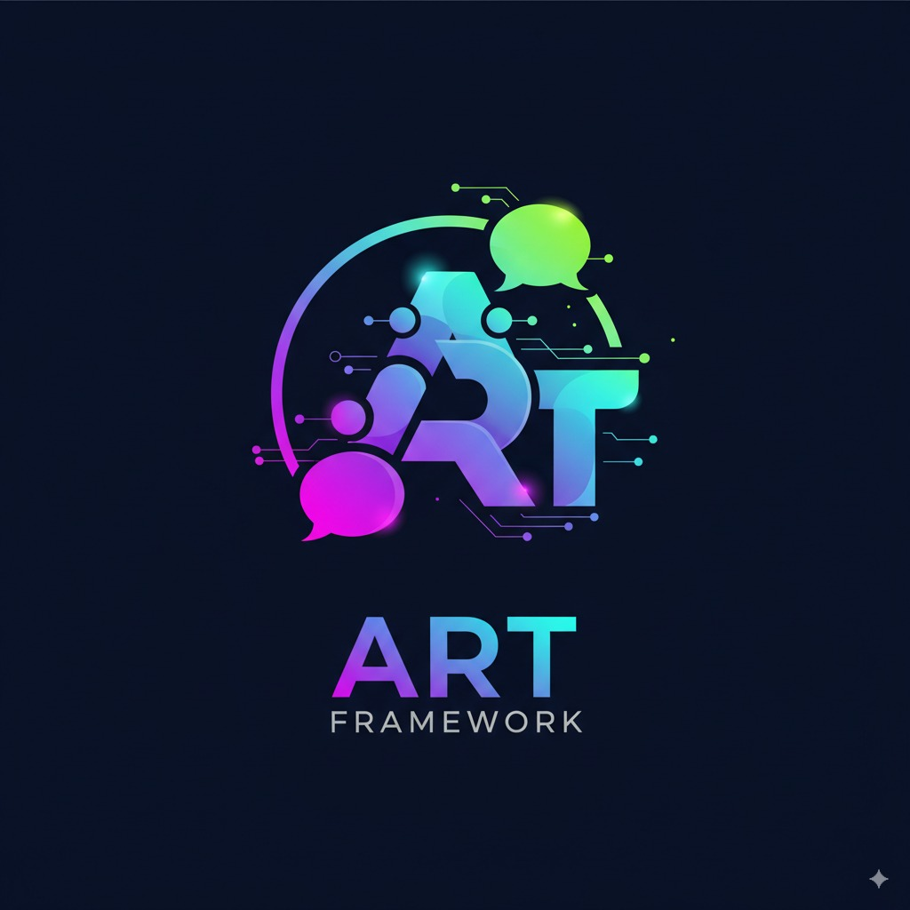

ART Framework API Docs
✨ ART: Agentic Runtime Framework 

ART is a powerful, modular, and browser-first TypeScript framework for building sophisticated LLM-powered agents capable of complex reasoning, planning, and tool usage.
It provides the building blocks for creating robust agentic systems that can run entirely client-side, emphasizing user privacy, offline capability, and deep observability, while also supporting server-side deployments.


Overview
Existing agent frameworks often rely on server-side components, limiting their use in web applications where user privacy or offline functionality is critical. ART is engineered to address this gap by providing a comprehensive, standalone toolkit designed for the browser, while remaining powerful enough for server-side execution.
Core Goals:
- Browser-First: Enable complex agent logic to run directly in the user's browser, enhancing privacy and reducing server costs.
- Modularity: Offer distinct, replaceable components for storage, reasoning, and tools.
- Observability: Provide deep, real-time insights into the agent's internal thought process.
- Developer Experience: Deliver a layered API that is simple for basic use cases yet powerful enough for advanced customization.
Key Features
Reasoning & Orchestration
- Swappable Agent Cores: Start with the default Plan-Execute-Synthesize (
PESAgent) pattern and seamlessly switch to or create custom reasoning patterns (e.g., ReAct, Chain of Thought). - Streaming-First: Native support for streaming LLM responses, enabling real-time, interactive user experiences.
- Dynamic Prompt Management: A powerful system for constructing prompts from blueprints with dynamic context injection.
- Agent Persona Customization: Easily define your agent's identity and default system prompt through a simple configuration object.
- Rich Observability: A detailed, typed
Observationsystem provides transparent insights into every step of an agent's operation for debugging, monitoring, and visualization.
Connectivity & Data
- Multi-Provider Support: A centralized
ProviderManagerallows runtime selection and configuration of multiple LLM providers (OpenAI, Anthropic, Gemini, OpenRouter, and local models via Ollama). - Pluggable Storage: A flexible
StorageAdapterinterface allows easy integration with any storage backend (default support for IndexedDB, InMemory, and Supabase). - Schema-Driven Tooling: A robust tool integration system with automatic schema validation and secure execution.
- Dynamic Tool Loading (MCP): Support for the Model Context Protocol (MCP) enables agents to dynamically discover and use tools from compliant external servers.
Developer Experience
- Browser-First Design: Built to run fully in the browser, enabling privacy-preserving and offline-capable applications.
- Flexible UI Integration: A typed, publish/subscribe socket system allows for reactive UI updates with fine-grained event filtering.
- TypeScript-Native: Engineered from the ground up with TypeScript for a robust, type-safe development experience.
Architecture: The 3 Nodes
ART's architecture is best understood as three interconnected nodes:
flowchart LR
A["Node 1: Developer Interface\n(Your Code & Config)"] -- Configures & Invokes --> B["Node 2: ART Core Orchestration\n(The Framework's Brain)"]
B -- Manages & Uses --> C["Node 3: External Dependencies & Interactions\n(LLMs, Tools, Storage)"]
C -- Provides Data/Services --> B
B -- Streams Results/Updates --> A
- Node 1: Developer Interface (Your Code & Config): This is your interaction point with ART. You use
createArtInstanceto configure the framework, selecting your storage, LLM providers, and tools. You then invoke the agent via theart.process()method. - Node 2: ART Core Orchestration (The Framework's Brain): This is the internal engine that manages the agent's lifecycle. It orchestrates state, reasons with LLMs, constructs prompts, executes tools, and broadcasts updates to your UI. The selected
Agent Core(e.g.,PESAgent) dictates the high-level reasoning strategy used here. - Node 3: External Dependencies & Interactions (The Outside World): This node represents the external services ART connects to. This includes LLM APIs (like OpenAI), your custom tool logic, and storage backends (like IndexedDB or a remote database).
Installation
npm install art-framework
# or
pnpm install art-framework
# or
yarn add art-framework
Quick Start
This example demonstrates setting up a simple agent that uses OpenAI and runs in-memory. For a complete example with all configurations, see the Comprehensive Developer Guide.
import {
createArtInstance,
ArtInstanceConfig,
ThreadConfig,
CalculatorTool,
OpenAIAdapter,
GeminiAdapter
} from 'art-framework';
// --- 1. Configure the ART Instance ---
// Note: No API keys or secrets are present here.
const artConfig: ArtInstanceConfig = {
storage: {
type: 'indexedDB',
dbName: 'MyCorrectChatDB'
},
providers: {
availableProviders: [
{ name: 'openai', adapter: OpenAIAdapter },
{ name: 'gemini', adapter: GeminiAdapter }
]
},
tools: [new CalculatorTool()],
persona: {
name: 'ConfigExpert',
prompts: {
synthesis: 'You explain configurations clearly.'
}
},
logger: { level: 'info' }
};
// --- 2. Main Application Logic ---
async function initializeAndRun() {
// Create the ART instance with the high-level configuration.
const art = await createArtInstance(artConfig);
console.log('ART Instance Initialized.');
// --- 3. Set Up a New Conversation Thread ---
const threadId = 'user-123-session-1';
// Create the thread-specific configuration.
// THIS is where you specify the provider, model, and API key.
const threadConfig: ThreadConfig = {
providerConfig: {
providerName: 'openai', // Must match a name from availableProviders
modelId: 'gpt-4o',
adapterOptions: {
apiKey: 'sk-your-real-openai-api-key', // Securely provide your API key here
temperature: 0.7
}
},
// Other thread settings
enabledTools: ['CalculatorTool'],
historyLimit: 20
};
// Save this configuration for the new thread.
// This step is crucial and must be done before the first `process` call.
await art.stateManager.setThreadConfig(threadId, threadConfig);
console.log(`ThreadConfig set for threadId: ${threadId}`);
// Now the ART instance is ready to process requests for this thread.
console.log('Sending first message...');
const response = await art.process({
query: 'What is 2 + 2?',
threadId: threadId
});
console.log('Final response:', response.response.content);
}
initializeAndRun().catch(console.error);
(Note: Replace 'YOUR_OPENAI_API_KEY' with your actual key. In a real application, load this from a secure source like environment variables or a secrets manager.)
Documentation
- Comprehensive Developer Guide: The primary guide covering concepts, architecture, and API usage. (Start Here!)
- How-To Guides: Practical guides for specific tasks, such as Customizing the Agent's Persona.
- API Reference: Auto-generated API documentation.
- Examples: Find practical examples, including a full React chatbot implementation.
Contributing
Contributions are welcome! Please refer to the Contributing Guide for details on how to submit issues, feature requests, and pull requests.
License
ART Framework is released under the MIT License.